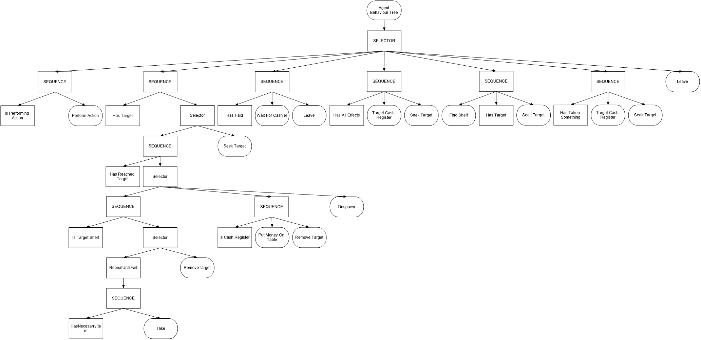
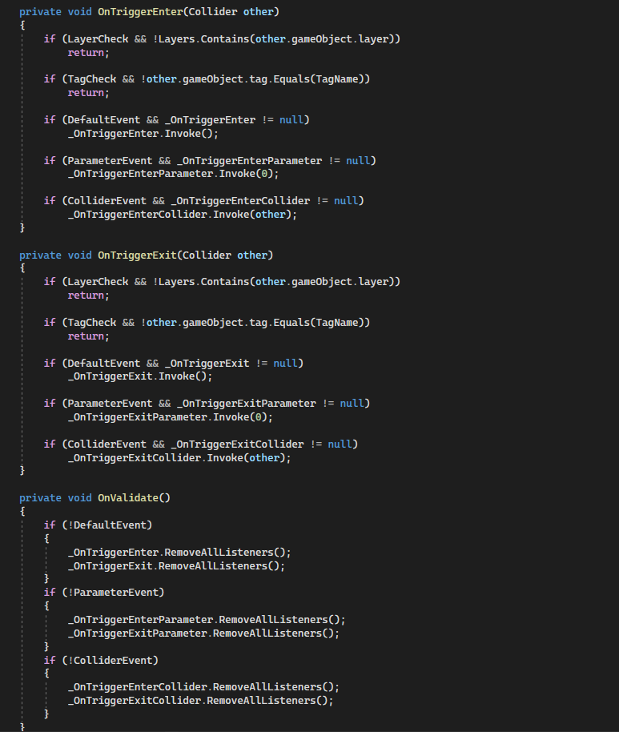

After my internship at TruePlayers, they gave me an Oculus Quest 2 as gift for what I have done for them, since the internship wasn't paid.
For some time I wanted to do make something on my own. Only after I played a game called "Atelier: Ryza", I got the idea of making a game about creating and selling potions.
The project started a bit too ambitious for the time I had and I had to scale it down a lot.
I wanted to get a basic game at the end of my Easter Holidays. I started with the game in February. A total of 2.5 months where I spent the first 2 weeks fully on the game and the remaining 2 months 1-2 days a week.
Idea
- Gather ingredients from different maps
- Grow ingredients in a backyard
- Research the effects ingredients have
- Each game would randomize the effects ingredients would have
- A system where opposite effect nullify eachother
- Each effect has it's own color
- A cauldron will blend the colors
- A quality system for the finished product
What's in the game
- Buy ingredients
- Make potions
- Sell potions
- Customer AI
- Day/Night cicle
- A cauldron will blend the colors
- A quality system for the finished product
AI

Remote Event Trigger
Although this is probably something most Unity games will have. I still wanted it to be included.
Because OnTriggerEnter() and OnTriggerExit() only work on scripts that are in a GameObject with a collider component. A central script for the entire GameObject can't get a call from this collider component.
So I made a script with some options I would need.

But it felt a bit messy having many fields in the inspector.
I made a editor script that would only display the events I want to add a reference to when I select a checkbox.